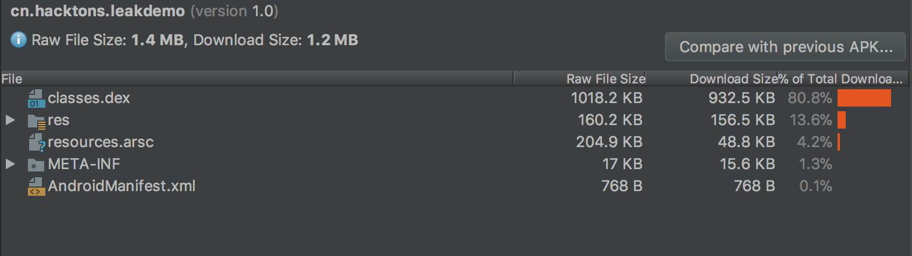
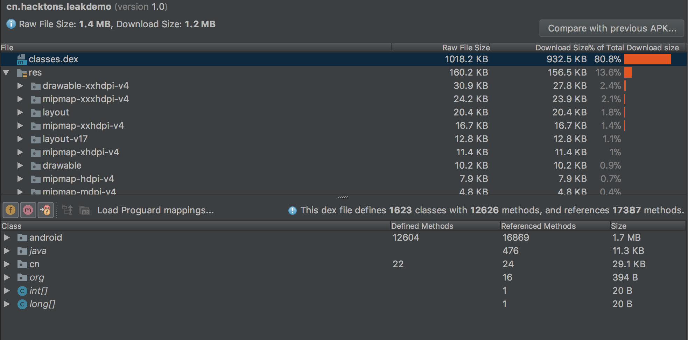

瘦身思路与方向介绍
安装包瘦身顾名思义，就是减小APK的大小。作为控制APK大小的一种相对滞后的优化，相对其他影响程序性能的指标来说，更多的是和市场上架，用户下载关系密切。如果要持续优化安装包大小则需要从开发规范上入手，一方面尽量减少开发期间带入过多冗余资源，另一方面需要定期分析。可以建立安装包的大小监控平台，自动统计每次构建的安装包的大小，或则每个发布包的大小，最终形成一份变化图表。
APK组成
在瘦身之前，我们需要认识，一个apk里面都包含哪些东西，以及他们分别的大小。 一般来说一个APK会包含：若干个classes.dex，resources.arsc,manifest清单，res图片资源，META-INF元数据，assets资源，so文件；除此之外可能还会有一些其他的资源，比如微博sdk附带了证书签名，推送附带版本号文件等等。
下面是一个测试的apk构成：
aven-mac-pro-2:LeakDemo aven$ unzip -l app/build/outputs/apk/debug/app-debug.apk
Archive: app/build/outputs/apk/debug/app-debug.apk
Length Date Time Name
--------- ---------- ----- ----
1764 00-00-1980 00:00 AndroidManifest.xml
1203 00-00-1980 00:00 META-INF/CERT.RSA
24075 00-00-1980 00:00 META-INF/CERT.SF
24032 00-00-1980 00:00 META-INF/MANIFEST.MF
3024256 00-00-1980 00:00 classes.dex
328 00-00-1980 00:00 res/anim/abc_fade_in.xml
328 00-00-1980 00:00 res/anim/abc_fade_out.xml
792 00-00-1980 00:00 res/anim/abc_grow_fade_in_from_bottom.xml
444 00-00-1980 00:00 res/anim/abc_popup_enter.xml
444 00-00-1980 00:00 res/anim/abc_popup_exit.xml
792 00-00-1980 00:00 res/anim/abc_shrink_fade_out_from_bottom.xml
332 00-00-1980 00:00 res/anim/abc_slide_in_bottom.xml
332 00-00-1980 00:00 res/anim/abc_slide_in_top.xml
332 00-00-1980 00:00 res/anim/abc_slide_out_bottom.xml
332 00-00-1980 00:00 res/anim/abc_slide_out_top.xml
328 00-00-1980 00:00 res/anim/tooltip_enter.xml
328 00-00-1980 00:00 res/anim/tooltip_exit.xml
404 00-00-1980 00:00 res/color-v11/abc_background_cache_hint_selector_material_dark.xml
404 00-00-1980 00:00 res/color-v11/abc_background_cache_hint_selector_material_light.xml
436 00-00-1980 00:00 res/color-v23/abc_btn_colored_borderless_text_material.xml
436 00-00-1980 00:00 res/color-v23/abc_btn_colored_text_material.xml
480 00-00-1980 00:00 res/color-v23/abc_color_highlight_material.xml
560 00-00-1980 00:00 res/color-v23/abc_tint_btn_checkable.xml
1060 00-00-1980 00:00 res/color-v23/abc_tint_default.xml
604 00-00-1980 00:00 res/color-v23/abc_tint_edittext.xml
436 00-00-1980 00:00 res/color-v23/abc_tint_seek_thumb.xml
604 00-00-1980 00:00 res/color-v23/abc_tint_spinner.xml
600 00-00-1980 00:00 res/color-v23/abc_tint_switch_track.xml
484 00-00-1980 00:00 res/color/abc_btn_colored_borderless_text_material.xml
484 00-00-1980 00:00 res/color/abc_btn_colored_text_material.xml
500 00-00-1980 00:00 res/color/abc_hint_foreground_material_dark.xml
500 00-00-1980 00:00 res/color/abc_hint_foreground_material_light.xml
400 00-00-1980 00:00 res/color/abc_primary_text_disable_only_material_dark.xml
400 00-00-1980 00:00 res/color/abc_primary_text_disable_only_material_light.xml
400 00-00-1980 00:00 res/color/abc_primary_text_material_dark.xml
400 00-00-1980 00:00 res/color/abc_primary_text_material_light.xml
524 00-00-1980 00:00 res/color/abc_search_url_text.xml
400 00-00-1980 00:00 res/color/abc_secondary_text_material_dark.xml
400 00-00-1980 00:00 res/color/abc_secondary_text_material_light.xml
608 00-00-1980 00:00 res/color/abc_tint_btn_checkable.xml
1104 00-00-1980 00:00 res/color/abc_tint_default.xml
652 00-00-1980 00:00 res/color/abc_tint_edittext.xml
484 00-00-1980 00:00 res/color/abc_tint_seek_thumb.xml
652 00-00-1980 00:00 res/color/abc_tint_spinner.xml
648 00-00-1980 00:00 res/color/abc_tint_switch_track.xml
400 00-00-1980 00:00 res/color/switch_thumb_material_dark.xml
400 00-00-1980 00:00 res/color/switch_thumb_material_light.xml
5632 00-00-1980 00:00 res/drawable-anydpi-v21/ic_launcher_background.xml
260 00-00-1980 00:00 res/drawable-ldrtl-xxhdpi-v17/abc_ic_menu_copy_mtrl_am_alpha.png
705 00-00-1980 00:00 res/drawable-ldrtl-xxhdpi-v17/abc_ic_menu_cut_mtrl_alpha.png
525 00-00-1980 00:00 res/drawable-ldrtl-xxhdpi-v17/abc_spinner_mtrl_am_alpha.9.png
204 00-00-1980 00:00 res/drawable-v21/abc_action_bar_item_background_material.xml
1656 00-00-1980 00:00 res/drawable-v21/abc_btn_colored_material.xml
1108 00-00-1980 00:00 res/drawable-v21/abc_edit_text_material.xml
640 00-00-1980 00:00 res/drawable-v21/abc_ratingbar_indicator_material.xml
640 00-00-1980 00:00 res/drawable-v21/abc_ratingbar_material.xml
640 00-00-1980 00:00 res/drawable-v21/abc_ratingbar_small_material.xml
1068 00-00-1980 00:00 res/drawable-v21/notification_action_background.xml
240 00-00-1980 00:00 res/drawable-v23/abc_control_background_material.xml
592 00-00-1980 00:00 res/drawable-v24/$ic_launcher_foreground__0.xml
1536 00-00-1980 00:00 res/drawable-v24/ic_launcher_foreground.xml
221 00-00-1980 00:00 res/drawable-xhdpi-v4/notification_bg_low_normal.9.png
252 00-00-1980 00:00 res/drawable-xhdpi-v4/notification_bg_low_pressed.9.png
221 00-00-1980 00:00 res/drawable-xhdpi-v4/notification_bg_normal.9.png
247 00-00-1980 00:00 res/drawable-xhdpi-v4/notification_bg_normal_pressed.9.png
138 00-00-1980 00:00 res/drawable-xhdpi-v4/notify_panel_notification_icon_bg.png
286 00-00-1980 00:00 res/drawable-xxhdpi-v4/abc_ab_share_pack_mtrl_alpha.9.png
307 00-00-1980 00:00 res/drawable-xxhdpi-v4/abc_btn_check_to_on_mtrl_000.png
593 00-00-1980 00:00 res/drawable-xxhdpi-v4/abc_btn_check_to_on_mtrl_015.png
984 00-00-1980 00:00 res/drawable-xxhdpi-v4/abc_btn_radio_to_on_mtrl_000.png
1208 00-00-1980 00:00 res/drawable-xxhdpi-v4/abc_btn_radio_to_on_mtrl_015.png
2463 00-00-1980 00:00 res/drawable-xxhdpi-v4/abc_btn_switch_to_on_mtrl_00001.9.png
2834 00-00-1980 00:00 res/drawable-xxhdpi-v4/abc_btn_switch_to_on_mtrl_00012.9.png
237 00-00-1980 00:00 res/drawable-xxhdpi-v4/abc_cab_background_top_mtrl_alpha.9.png
224 00-00-1980 00:00 res/drawable-xxhdpi-v4/abc_ic_commit_search_api_mtrl_alpha.png
263 00-00-1980 00:00 res/drawable-xxhdpi-v4/abc_ic_menu_copy_mtrl_am_alpha.png
710 00-00-1980 00:00 res/drawable-xxhdpi-v4/abc_ic_menu_cut_mtrl_alpha.png
348 00-00-1980 00:00 res/drawable-xxhdpi-v4/abc_ic_menu_paste_mtrl_am_alpha.png
262 00-00-1980 00:00 res/drawable-xxhdpi-v4/abc_ic_menu_selectall_mtrl_alpha.png
700 00-00-1980 00:00 res/drawable-xxhdpi-v4/abc_ic_menu_share_mtrl_alpha.png
459 00-00-1980 00:00 res/drawable-xxhdpi-v4/abc_ic_star_black_16dp.png
983 00-00-1980 00:00 res/drawable-xxhdpi-v4/abc_ic_star_black_36dp.png
1291 00-00-1980 00:00 res/drawable-xxhdpi-v4/abc_ic_star_black_48dp.png
309 00-00-1980 00:00 res/drawable-xxhdpi-v4/abc_ic_star_half_black_16dp.png
577 00-00-1980 00:00 res/drawable-xxhdpi-v4/abc_ic_star_half_black_36dp.png
789 00-00-1980 00:00 res/drawable-xxhdpi-v4/abc_ic_star_half_black_48dp.png
171 00-00-1980 00:00 res/drawable-xxhdpi-v4/abc_list_divider_mtrl_alpha.9.png
245 00-00-1980 00:00 res/drawable-xxhdpi-v4/abc_list_focused_holo.9.png
221 00-00-1980 00:00 res/drawable-xxhdpi-v4/abc_list_longpressed_holo.9.png
212 00-00-1980 00:00 res/drawable-xxhdpi-v4/abc_list_pressed_holo_dark.9.png
212 00-00-1980 00:00 res/drawable-xxhdpi-v4/abc_list_pressed_holo_light.9.png
260 00-00-1980 00:00 res/drawable-xxhdpi-v4/abc_list_selector_disabled_holo_dark.9.png
258 00-00-1980 00:00 res/drawable-xxhdpi-v4/abc_list_selector_disabled_holo_light.9.png
1779 00-00-1980 00:00 res/drawable-xxhdpi-v4/abc_menu_hardkey_panel_mtrl_mult.9.png
2305 00-00-1980 00:00 res/drawable-xxhdpi-v4/abc_popup_background_mtrl_mult.9.png
322 00-00-1980 00:00 res/drawable-xxhdpi-v4/abc_scrubber_control_off_mtrl_alpha.png
403 00-00-1980 00:00 res/drawable-xxhdpi-v4/abc_scrubber_control_to_pressed_mtrl_000.png
595 00-00-1980 00:00 res/drawable-xxhdpi-v4/abc_scrubber_control_to_pressed_mtrl_005.png
210 00-00-1980 00:00 res/drawable-xxhdpi-v4/abc_scrubber_primary_mtrl_alpha.9.png
207 00-00-1980 00:00 res/drawable-xxhdpi-v4/abc_scrubber_track_mtrl_alpha.9.png
524 00-00-1980 00:00 res/drawable-xxhdpi-v4/abc_spinner_mtrl_am_alpha.9.png
851 00-00-1980 00:00 res/drawable-xxhdpi-v4/abc_switch_track_mtrl_alpha.9.png
204 00-00-1980 00:00 res/drawable-xxhdpi-v4/abc_tab_indicator_mtrl_alpha.9.png
420 00-00-1980 00:00 res/drawable-xxhdpi-v4/abc_text_select_handle_left_mtrl_dark.png
420 00-00-1980 00:00 res/drawable-xxhdpi-v4/abc_text_select_handle_left_mtrl_light.png
752 00-00-1980 00:00 res/drawable-xxhdpi-v4/abc_text_select_handle_middle_mtrl_dark.png
753 00-00-1980 00:00 res/drawable-xxhdpi-v4/abc_text_select_handle_middle_mtrl_light.png
422 00-00-1980 00:00 res/drawable-xxhdpi-v4/abc_text_select_handle_right_mtrl_dark.png
422 00-00-1980 00:00 res/drawable-xxhdpi-v4/abc_text_select_handle_right_mtrl_light.png
199 00-00-1980 00:00 res/drawable-xxhdpi-v4/abc_textfield_activated_mtrl_alpha.9.png
200 00-00-1980 00:00 res/drawable-xxhdpi-v4/abc_textfield_default_mtrl_alpha.9.png
187 00-00-1980 00:00 res/drawable-xxhdpi-v4/abc_textfield_search_activated_mtrl_alpha.9.png
186 00-00-1980 00:00 res/drawable-xxhdpi-v4/abc_textfield_search_default_mtrl_alpha.9.png
2830 00-00-1980 00:00 res/drawable-xxhdpi-v4/ic_launcher_background.png
528 00-00-1980 00:00 res/drawable/abc_btn_borderless_material.xml
404 00-00-1980 00:00 res/drawable/abc_btn_check_material.xml
280 00-00-1980 00:00 res/drawable/abc_btn_colored_material.xml
872 00-00-1980 00:00 res/drawable/abc_btn_default_mtrl_shape.xml
404 00-00-1980 00:00 res/drawable/abc_btn_radio_material.xml
312 00-00-1980 00:00 res/drawable/abc_cab_background_internal_bg.xml
276 00-00-1980 00:00 res/drawable/abc_cab_background_top_material.xml
656 00-00-1980 00:00 res/drawable/abc_dialog_material_background.xml
804 00-00-1980 00:00 res/drawable/abc_edit_text_material.xml
628 00-00-1980 00:00 res/drawable/abc_ic_ab_back_material.xml
940 00-00-1980 00:00 res/drawable/abc_ic_arrow_drop_right_black_24dp.xml
624 00-00-1980 00:00 res/drawable/abc_ic_clear_material.xml
576 00-00-1980 00:00 res/drawable/abc_ic_go_search_api_material.xml
728 00-00-1980 00:00 res/drawable/abc_ic_menu_overflow_material.xml
748 00-00-1980 00:00 res/drawable/abc_ic_search_api_material.xml
768 00-00-1980 00:00 res/drawable/abc_ic_voice_search_api_material.xml
952 00-00-1980 00:00 res/drawable/abc_item_background_holo_dark.xml
952 00-00-1980 00:00 res/drawable/abc_item_background_holo_light.xml
360 00-00-1980 00:00 res/drawable/abc_list_selector_background_transition_holo_dark.xml
360 00-00-1980 00:00 res/drawable/abc_list_selector_background_transition_holo_light.xml
1004 00-00-1980 00:00 res/drawable/abc_list_selector_holo_dark.xml
1004 00-00-1980 00:00 res/drawable/abc_list_selector_holo_light.xml
600 00-00-1980 00:00 res/drawable/abc_ratingbar_indicator_material.xml
600 00-00-1980 00:00 res/drawable/abc_ratingbar_material.xml
600 00-00-1980 00:00 res/drawable/abc_ratingbar_small_material.xml
1036 00-00-1980 00:00 res/drawable/abc_seekbar_thumb_material.xml
456 00-00-1980 00:00 res/drawable/abc_seekbar_tick_mark_material.xml
1344 00-00-1980 00:00 res/drawable/abc_seekbar_track_material.xml
1100 00-00-1980 00:00 res/drawable/abc_spinner_textfield_background_material.xml
404 00-00-1980 00:00 res/drawable/abc_switch_thumb_material.xml
404 00-00-1980 00:00 res/drawable/abc_tab_indicator_material.xml
456 00-00-1980 00:00 res/drawable/abc_text_cursor_material.xml
692 00-00-1980 00:00 res/drawable/abc_textfield_search_material.xml
552 00-00-1980 00:00 res/drawable/abc_vector_test.xml
472 00-00-1980 00:00 res/drawable/notification_bg.xml
472 00-00-1980 00:00 res/drawable/notification_bg_low.xml
312 00-00-1980 00:00 res/drawable/notification_icon_background.xml
240 00-00-1980 00:00 res/drawable/notification_tile_bg.xml
420 00-00-1980 00:00 res/drawable/tooltip_frame_dark.xml
420 00-00-1980 00:00 res/drawable/tooltip_frame_light.xml
2952 00-00-1980 00:00 res/layout-v16/notification_template_custom_big.xml
720 00-00-1980 00:00 res/layout-v17/abc_action_mode_close_item_material.xml
1488 00-00-1980 00:00 res/layout-v17/abc_alert_dialog_button_bar_material.xml
1464 00-00-1980 00:00 res/layout-v17/abc_alert_dialog_title_material.xml
1008 00-00-1980 00:00 res/layout-v17/abc_dialog_title_material.xml
788 00-00-1980 00:00 res/layout-v17/abc_popup_menu_header_item_layout.xml
1628 00-00-1980 00:00 res/layout-v17/abc_popup_menu_item_layout.xml
3412 00-00-1980 00:00 res/layout-v17/abc_search_view.xml
856 00-00-1980 00:00 res/layout-v17/abc_select_dialog_material.xml
1092 00-00-1980 00:00 res/layout-v17/notification_action.xml
1268 00-00-1980 00:00 res/layout-v17/notification_action_tombstone.xml
1636 00-00-1980 00:00 res/layout-v17/notification_template_big_media.xml
2980 00-00-1980 00:00 res/layout-v17/notification_template_big_media_custom.xml
1760 00-00-1980 00:00 res/layout-v17/notification_template_big_media_narrow.xml
3152 00-00-1980 00:00 res/layout-v17/notification_template_big_media_narrow_custom.xml
3148 00-00-1980 00:00 res/layout-v17/notification_template_custom_big.xml
2812 00-00-1980 00:00 res/layout-v17/notification_template_lines_media.xml
1228 00-00-1980 00:00 res/layout-v17/notification_template_media.xml
2696 00-00-1980 00:00 res/layout-v17/notification_template_media_custom.xml
800 00-00-1980 00:00 res/layout-v17/select_dialog_multichoice_material.xml
800 00-00-1980 00:00 res/layout-v17/select_dialog_singlechoice_material.xml
992 00-00-1980 00:00 res/layout-v17/tooltip.xml
1384 00-00-1980 00:00 res/layout-v21/abc_screen_toolbar.xml
992 00-00-1980 00:00 res/layout-v21/notification_action.xml
1168 00-00-1980 00:00 res/layout-v21/notification_action_tombstone.xml
2396 00-00-1980 00:00 res/layout-v21/notification_template_custom_big.xml
928 00-00-1980 00:00 res/layout-v21/notification_template_icon_group.xml
1532 00-00-1980 00:00 res/layout-v22/abc_alert_dialog_button_bar_material.xml
1440 00-00-1980 00:00 res/layout-v26/abc_screen_toolbar.xml
812 00-00-1980 00:00 res/layout/abc_action_bar_title_item.xml
376 00-00-1980 00:00 res/layout/abc_action_bar_up_container.xml
292 00-00-1980 00:00 res/layout/abc_action_bar_view_list_nav_layout.xml
704 00-00-1980 00:00 res/layout/abc_action_menu_item_layout.xml
456 00-00-1980 00:00 res/layout/abc_action_menu_layout.xml
404 00-00-1980 00:00 res/layout/abc_action_mode_bar.xml
628 00-00-1980 00:00 res/layout/abc_action_mode_close_item_material.xml
1624 00-00-1980 00:00 res/layout/abc_activity_chooser_view.xml
1244 00-00-1980 00:00 res/layout/abc_activity_chooser_view_list_item.xml
1440 00-00-1980 00:00 res/layout/abc_alert_dialog_button_bar_material.xml
2428 00-00-1980 00:00 res/layout/abc_alert_dialog_material.xml
1376 00-00-1980 00:00 res/layout/abc_alert_dialog_title_material.xml
964 00-00-1980 00:00 res/layout/abc_dialog_title_material.xml
328 00-00-1980 00:00 res/layout/abc_expanded_menu_layout.xml
464 00-00-1980 00:00 res/layout/abc_list_menu_item_checkbox.xml
620 00-00-1980 00:00 res/layout/abc_list_menu_item_icon.xml
1336 00-00-1980 00:00 res/layout/abc_list_menu_item_layout.xml
468 00-00-1980 00:00 res/layout/abc_list_menu_item_radio.xml
744 00-00-1980 00:00 res/layout/abc_popup_menu_header_item_layout.xml
1580 00-00-1980 00:00 res/layout/abc_popup_menu_item_layout.xml
488 00-00-1980 00:00 res/layout/abc_screen_content_include.xml
772 00-00-1980 00:00 res/layout/abc_screen_simple.xml
728 00-00-1980 00:00 res/layout/abc_screen_simple_overlay_action_mode.xml
1332 00-00-1980 00:00 res/layout/abc_screen_toolbar.xml
1852 00-00-1980 00:00 res/layout/abc_search_dropdown_item_icons_2line.xml
3364 00-00-1980 00:00 res/layout/abc_search_view.xml
812 00-00-1980 00:00 res/layout/abc_select_dialog_material.xml
788 00-00-1980 00:00 res/layout/activity_main.xml
1032 00-00-1980 00:00 res/layout/notification_action.xml
1204 00-00-1980 00:00 res/layout/notification_action_tombstone.xml
504 00-00-1980 00:00 res/layout/notification_media_action.xml
580 00-00-1980 00:00 res/layout/notification_media_cancel_action.xml
1440 00-00-1980 00:00 res/layout/notification_template_big_media.xml
2700 00-00-1980 00:00 res/layout/notification_template_big_media_custom.xml
1504 00-00-1980 00:00 res/layout/notification_template_big_media_narrow.xml
2808 00-00-1980 00:00 res/layout/notification_template_big_media_narrow_custom.xml
332 00-00-1980 00:00 res/layout/notification_template_icon_group.xml
2596 00-00-1980 00:00 res/layout/notification_template_lines_media.xml
1136 00-00-1980 00:00 res/layout/notification_template_media.xml
2464 00-00-1980 00:00 res/layout/notification_template_media_custom.xml
380 00-00-1980 00:00 res/layout/notification_template_part_chronometer.xml
380 00-00-1980 00:00 res/layout/notification_template_part_time.xml
576 00-00-1980 00:00 res/layout/select_dialog_item_material.xml
716 00-00-1980 00:00 res/layout/select_dialog_multichoice_material.xml
716 00-00-1980 00:00 res/layout/select_dialog_singlechoice_material.xml
404 00-00-1980 00:00 res/layout/support_simple_spinner_dropdown_item.xml
908 00-00-1980 00:00 res/layout/tooltip.xml
388 00-00-1980 00:00 res/mipmap-anydpi-v26/ic_launcher.xml
388 00-00-1980 00:00 res/mipmap-anydpi-v26/ic_launcher_round.xml
3056 00-00-1980 00:00 res/mipmap-hdpi-v4/ic_launcher.png
5024 00-00-1980 00:00 res/mipmap-hdpi-v4/ic_launcher_round.png
2096 00-00-1980 00:00 res/mipmap-mdpi-v4/ic_launcher.png
2858 00-00-1980 00:00 res/mipmap-mdpi-v4/ic_launcher_round.png
4569 00-00-1980 00:00 res/mipmap-xhdpi-v4/ic_launcher.png
7098 00-00-1980 00:00 res/mipmap-xhdpi-v4/ic_launcher_round.png
6464 00-00-1980 00:00 res/mipmap-xxhdpi-v4/ic_launcher.png
10676 00-00-1980 00:00 res/mipmap-xxhdpi-v4/ic_launcher_round.png
9250 00-00-1980 00:00 res/mipmap-xxxhdpi-v4/ic_launcher.png
15523 00-00-1980 00:00 res/mipmap-xxxhdpi-v4/ic_launcher_round.png
209844 00-00-1980 00:00 resources.arsc
--------- -------
3545746 243 files
apk中一共有243个文件，其中res包含了237个，有很多资源是sdk打包过程中自带的，并不是app业务层新增，同时还有适配的各种分辨率资源。
如果想看不同资源的占比，可以借助一些分析工具，比如Android Studio自带的Analyze APK

很明显，这个APK中图片资源其实比较少，classex.dex占比达到了80%

瘦身主要方式
根据APK的组成，我们可以采用不同的方式来减小他们的体积。
- 代码删除，代码混淆可以减少classes.dex的体积
- 图片压缩可以减小res的体积
- lint扫描可以提测冗余资源
- WebP可以替代PNG大幅减小图片体积
- Andreguard可以混淆resources.arsc,减小体积
- 内置压缩可以减小assets体积等等。
下面我们将具体分析。